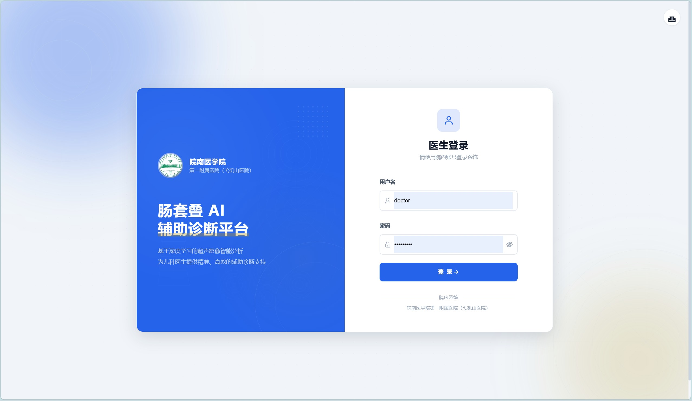
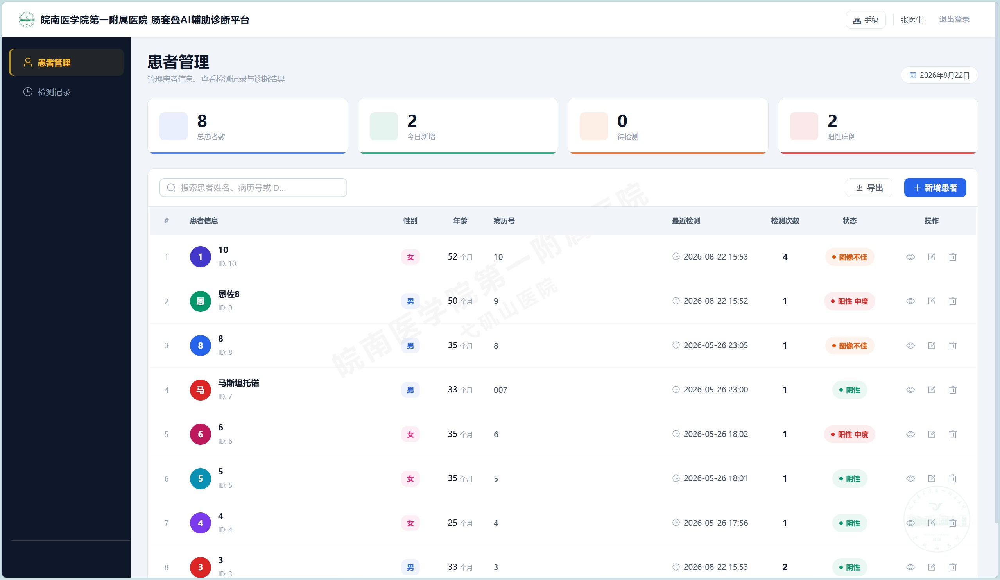
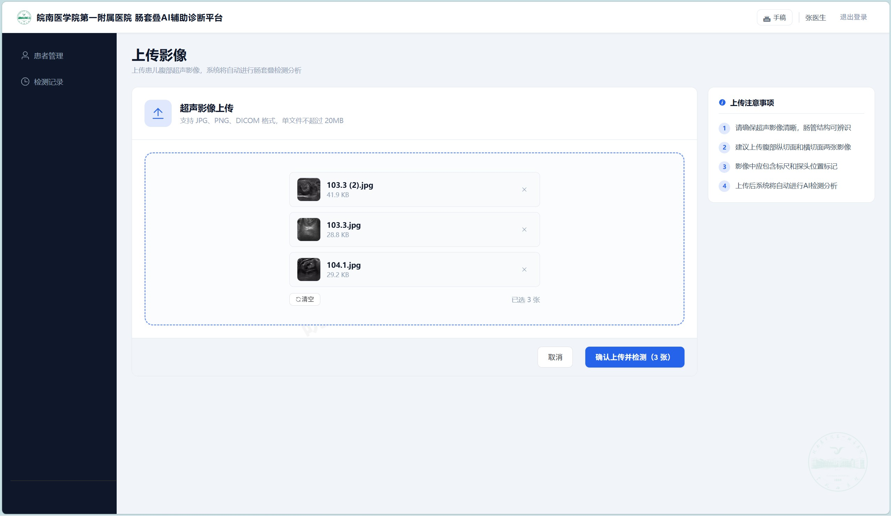
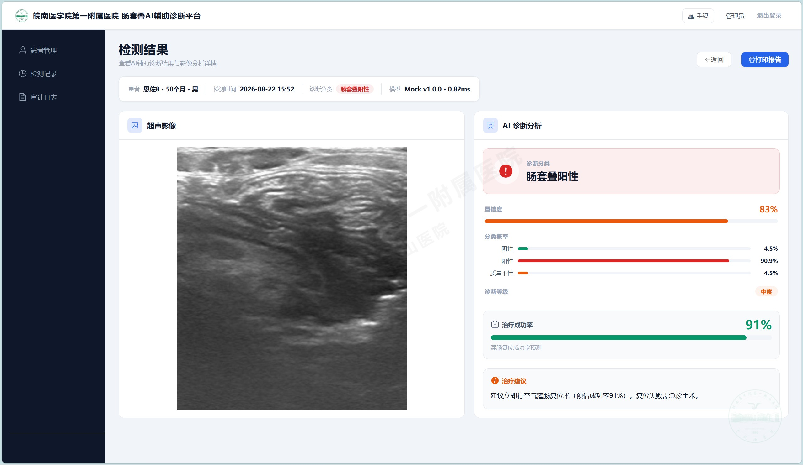
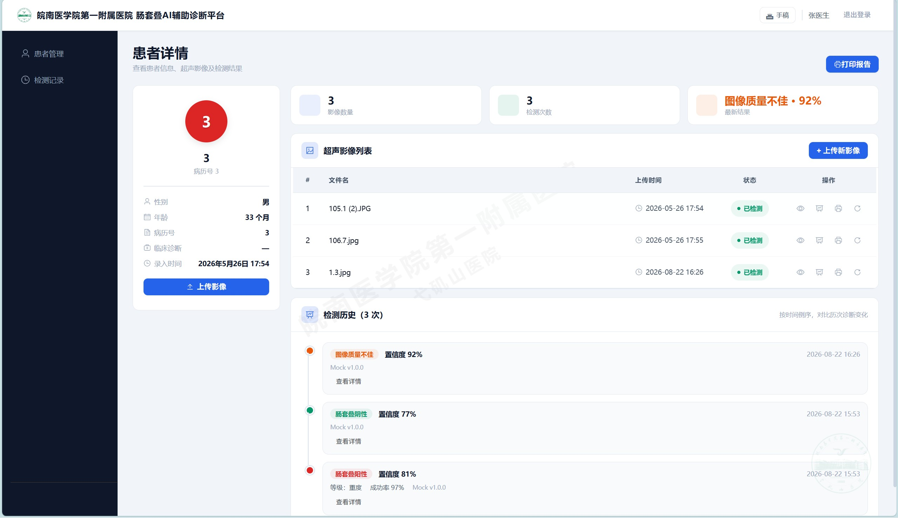
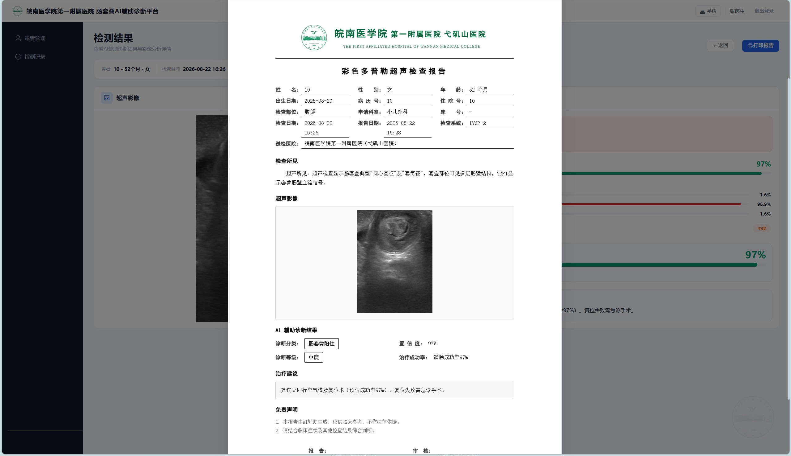
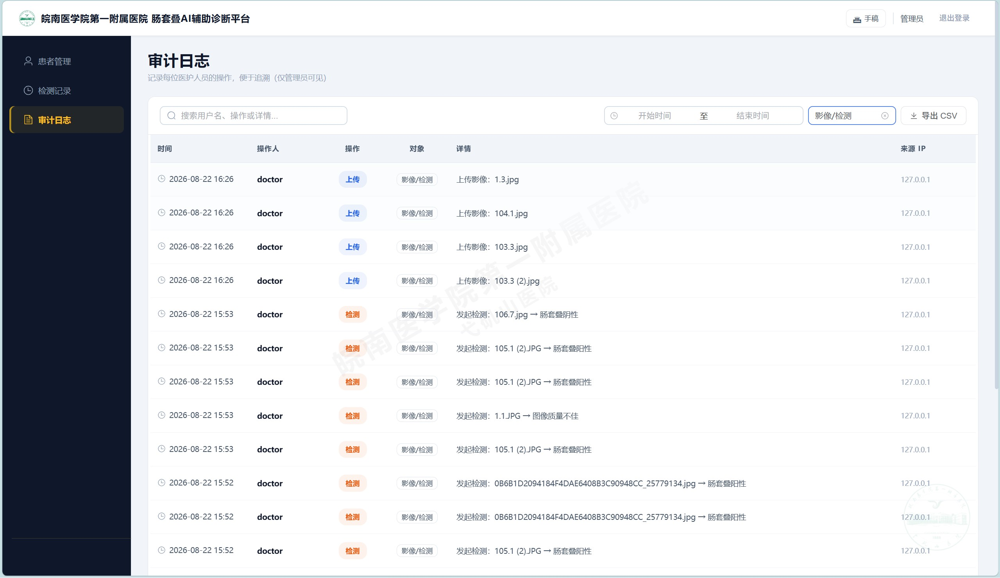

面向医院的诊疗场景，提供患者管理、超声影像上传、AI 辅助检测、结果展示与报告打印的一站式平台，帮助医生快速判断儿童肠套叠。
把一个复杂的 AI 诊疗流程，拆成医生熟悉的、清晰可控的几步操作。
对超声影像自动给出「阳性 / 阴性 / 质量不佳」分类与置信度，并支持多分类概率展示。
患者信息录入、搜索、编辑，支持病历号、住院号、检查部位、出生日期等字段。
支持拖拽/选择多张 JPG / PNG / BMP / DICOM，上传后逐张自动检测，带进度。
自动生成带医院抬头的彩色多普勒超声检查报告，可导出 PDF。
从登录到打印报告，只需几分钟。
医生 / 管理员账号登录，JWT 安全认证。
→录入患儿基本信息与临床症状。
→上传腹部超声影像，可一次多张。
→系统调用 AI 模型，自动检测并给出结果。
→查看分类、置信度、严重度与治疗建议。
→一键生成并导出 PDF 检查报告。
→每个模块都对应平台里的一块真实功能。
医生与管理员分角色登录，权限分级（医生仅管理本人数据，管理员全权），并记录登录审计。

患者列表带搜索、分页、状态标签与统计卡片；支持新增 / 编辑 / 删除患者。

支持拖拽 / 点击选择，一次可上传多张 JPG / PNG / BMP / DICOM，上传后逐张自动检测并显示进度。

清晰展示诊断分类、置信度、严重度、治疗成功率、治疗建议，以及各分类的概率条与模型信息。

同一患者的历次检测以时间线展示，支持前后对比、按分类 / 患者筛选，并可导出 CSV。

生成带医院抬头的彩色多普勒超声检查报告，含患者信息、检查所见、AI 诊断结果与治疗建议。

记录每位医护人员的操作（登录、增删改、检测、设置），含时间、操作人、来源 IP，可按日期筛选、导出 CSV。

不只是界面，底层的稳定性、安全与可维护性同样被认真对待。
Vue 3 + Element Plus 前端 / FastAPI 后端，REST 接口，便于维护与分工。
JWT 认证、角色权限分级、CORS 白名单、上传字节校验，保障数据安全。
AI 检测在后台线程执行、前端轮询进度，推理慢也不阻塞界面。
全程操作审计、模型元数据记录，便于科研数据追溯与合规。